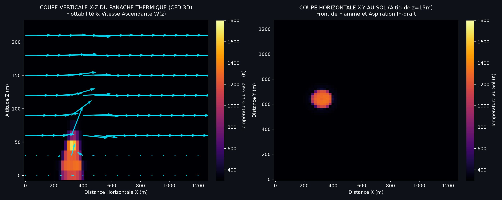
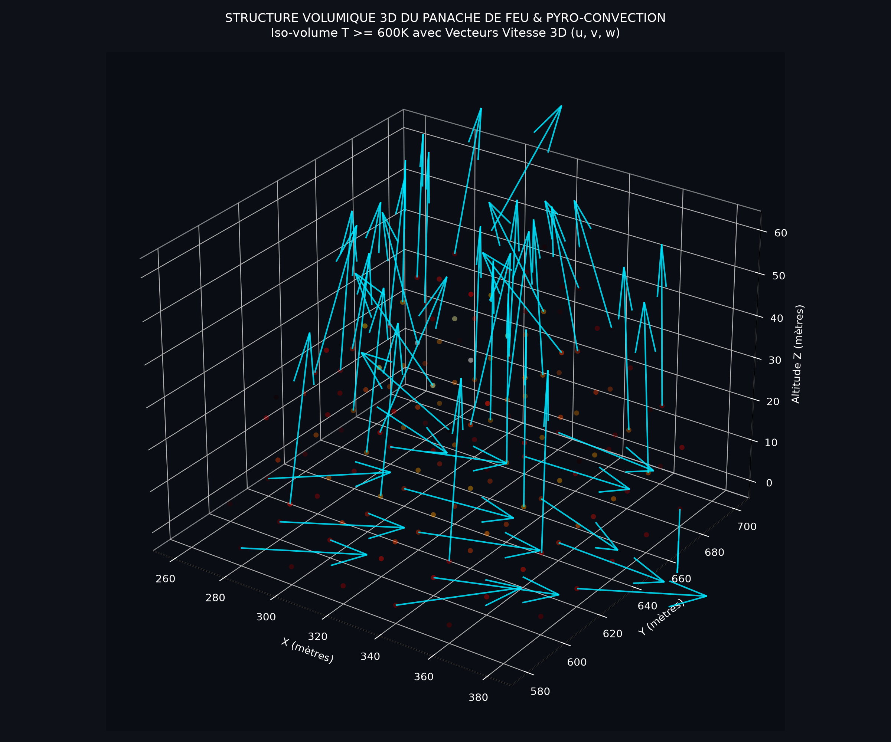
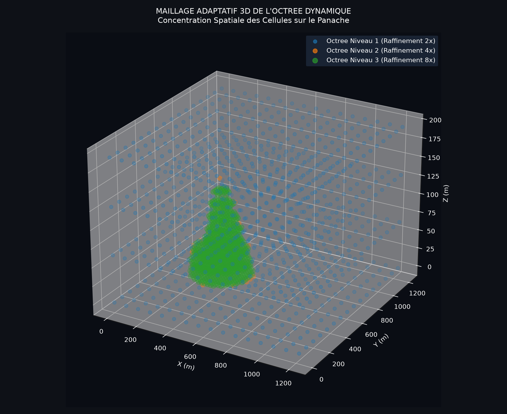

Révèle la colonne de convection thermique ascendant jusqu'à 240m et le champ vectoriel (U, W) altéré par le feu.

Visualisation tridimensionnelle directe du front de combustion (T ≥ 600K) avec vecteurs de vitesse 3D montrant l'aspiration à la base et l'éjection vers le haut.

Preuve mathématique du raffinement hiérarchique concentré dans le volume 3D du front de flamme avec 96.80% d'économie mémoire.
